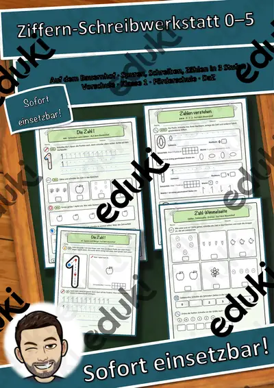

Krimi-Rätselheft „Der verschwundene Klassenschlitten“: eigener Fall mit Spuren, Tabelle und Geheimschrift in 3 Stufen (Klasse 2–3)
Der rote Klassenschlitten „Blitz“ ist über Nacht verschwunden! Die jungen Detektive Nele und Jonas sammeln Spuren, lesen Listen und befragen Zeugen – und die Kinder helfen mit. In drei Kapiteln findet man drei Spuren; erst alle zusammen lassen genau einen Verdächtigen von fünf übrig. Ein eigener Fall mit eigener Geschichte, vollständig erfunden und auf eindeutige Lösung geprüft.
Dreifach differenziert:
- ★ Kurzfassung je Kapitel, Ankreuzaufgaben, Ermittlungstabelle mit Hilfen
- ★★ ganzes Kapitel genau lesen, kurze Antworten, Tabelle selbst ausfüllen
- ★★★ schlussfolgern, in ganzen Sätzen begründen, Bericht für die Schulleitung, Geheimschrift mit Tipp
Inhalt (14 Seiten inkl. Deckblatt):
- So arbeitet die Detektiv-AG, Detektivausweis
- Die Verdächtigen: 5 Karten zum Ausfüllen
- 3 Kapitel (Zaun, Garderobe, Pausenaufsicht) mit Aufgaben in 3 Stufen
- Ermittlungstabelle in 3 Stufen, Täterbeweis mit Lückentext, Satzanfängen und Bericht
- Die Auflösung als Abschlusskapitel mit Gesprächsanlass
- Geheimschrift: Zahlen-Code, Buchstaben-Code, Geheimschrift mit Tipp
- Schreibwerkstatt „Mein eigener Fall“
- Ich-kann-Check, Lösungen mit Beispielantworten, Lehrkraftseite
Einsatz: Deutsch Klasse 2–3, Leseförderung, Logik, Förderunterricht, Vertretungsstunde, Winter-Projekttag. Dauer ca. 90 Minuten, auch in drei Einheiten.
Teil der Reihe „Winter-Rätselwerkstatt“ (3 Materialien: Wer bin ich? · Krimi-Rätselheft · Logicals „Wer ist wer?“) – im Paket günstiger.
Rätsel, Aufgaben und Layout eigene Erstellung. Symbole aus der freien Schrift Noto Color Emoji (SIL OFL), keine Fotos, keine realen Personen, keine Marken. Texte mit KI-Unterstützung erstellt und geprüft.
Viel Freude beim Raten, Lesen und Knobeln wünscht Snice! :)
Ähnliche Materialien

Winter-Rätselwerkstatt Materialpaket: Wer bin ich? + Krimi-Rätselheft + Logicals – 3 Rätselhefte in 3 Stufen (Klasse 1–4)

Geheimschrift Lückentext mit Wortspeicher Hörverstehen und Suchsel

Geheimschriften – Nachrichten verschlüsseln und entschlüsseln – Lesespurgeschichte mit Rätselaufgaben (Klasse 3)

Lesespaziergang: Spuren im Schnee – 3-fach differenziert (★/★★/★★★), Klasse 2–4

Fall in der Grammatik Lückentext mit Wortspeicher Hörverstehen und Suchsel

Auf den Spuren der Alpen – Lesespurgeschichte mit Rätselaufgaben (Klasse 5)

Sport und Umwelt – Natursport ohne Spuren – Lesespurgeschichte mit Rätselaufgaben (Klasse 9)
